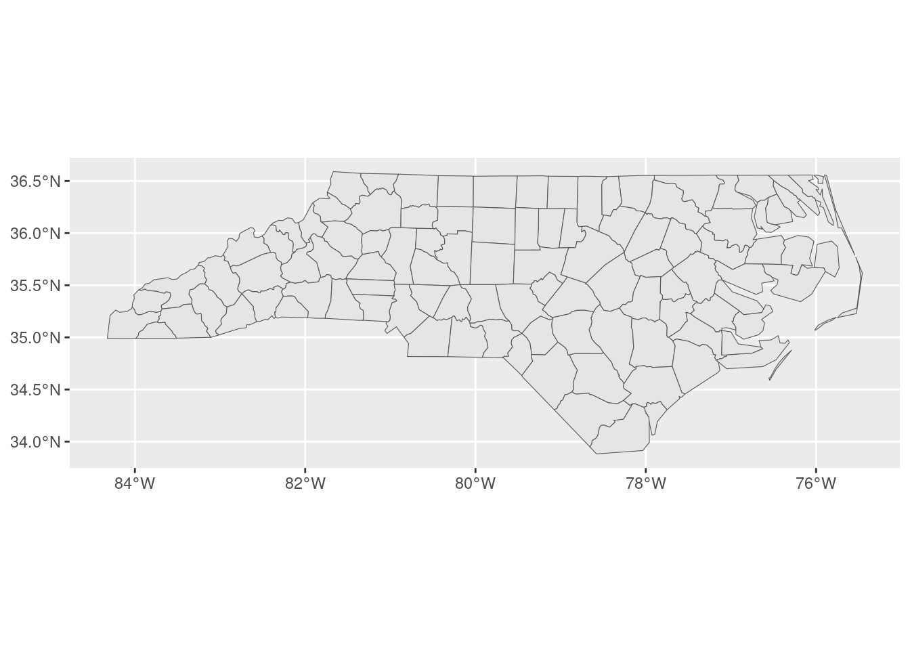
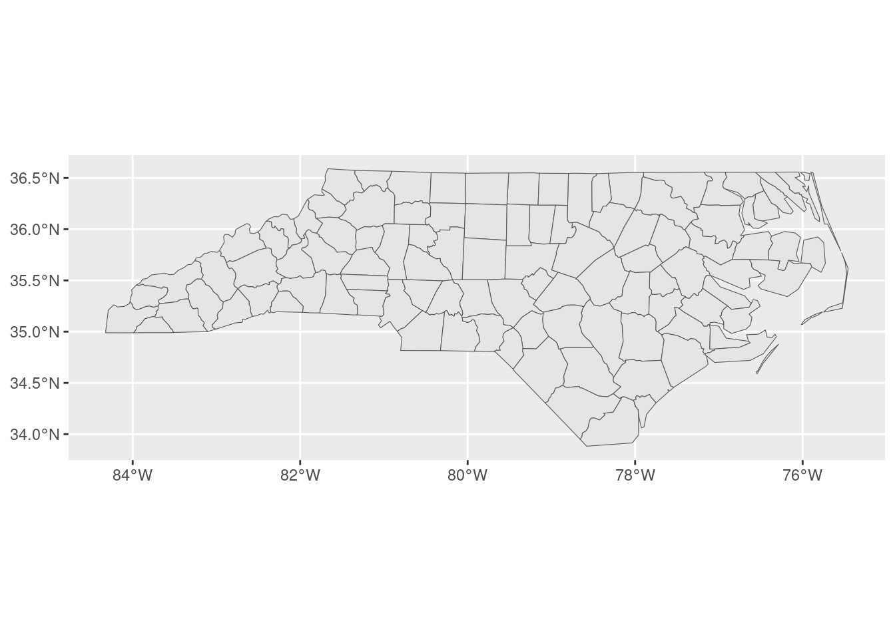
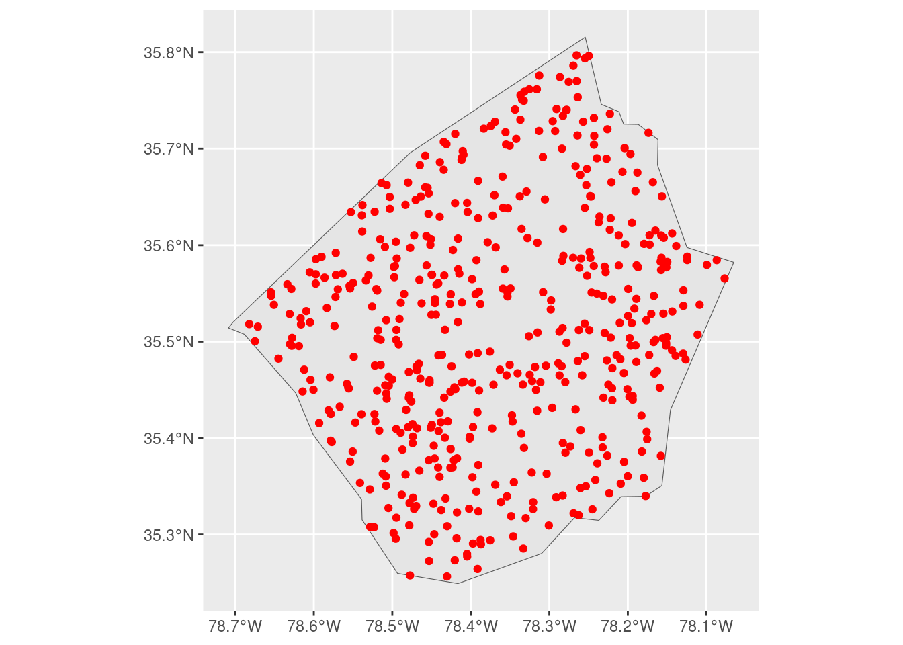
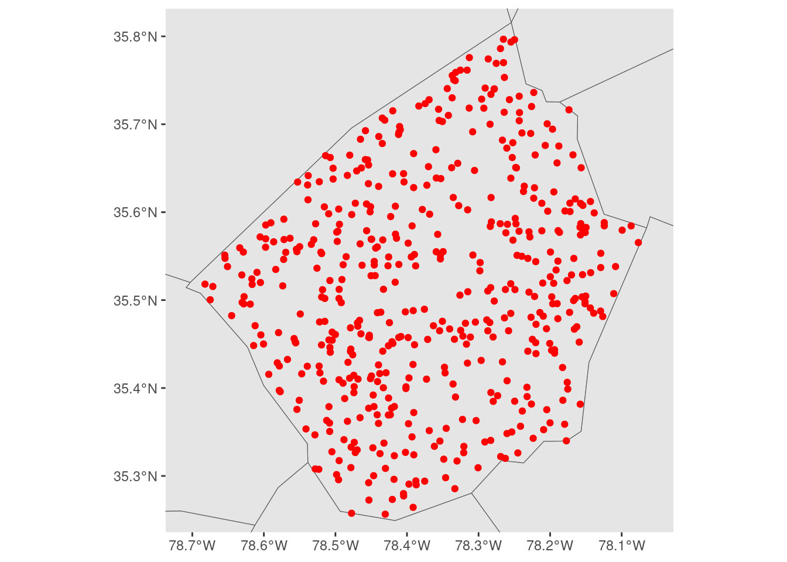
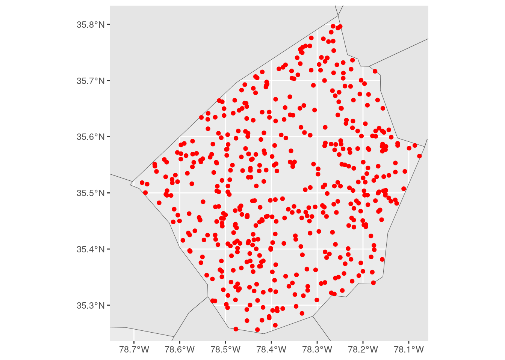
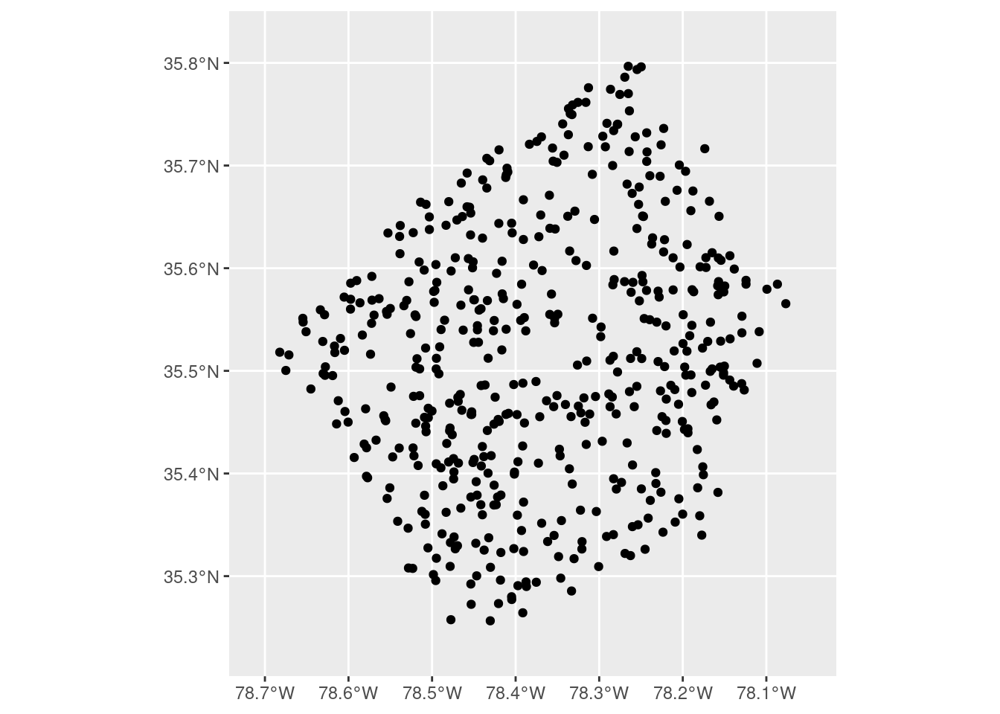
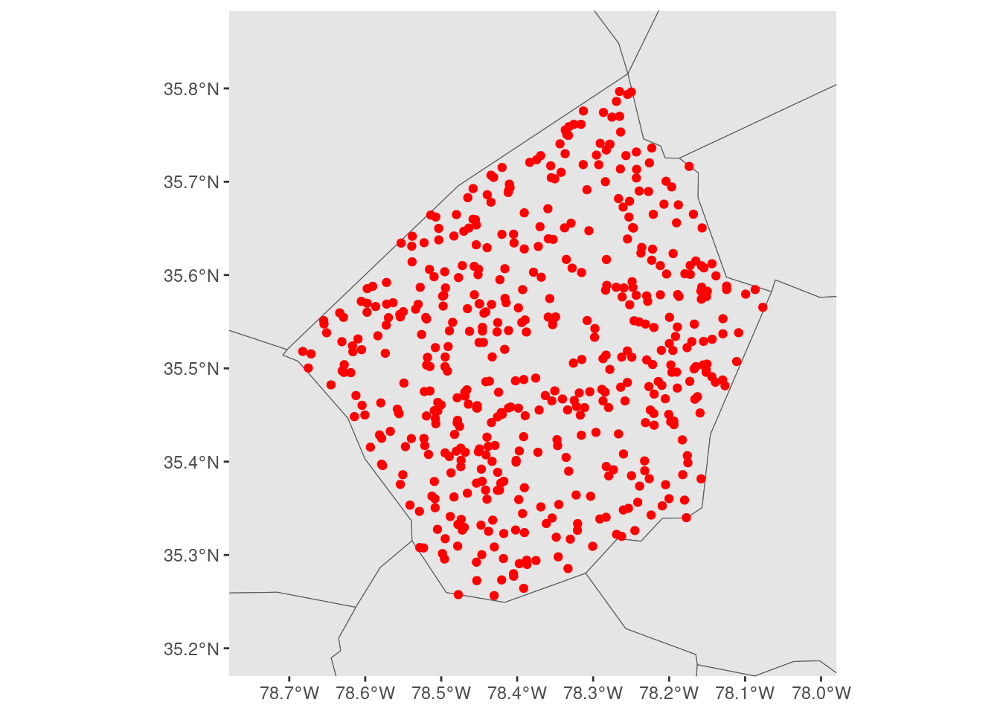

suppressPackageStartupMessages(library(sf))
library(ggplot2)
nc <- system.file("shape/nc.shp", package = "sf") |>
read_sf()
ggplot(nc) +
geom_sf()
October 31, 2023
A colleague asked me today how they could best add a larger data set for context to a map of a (spatially) smaller data set, without the map expanding to incorporate the whole of the larger data set. I didn’t have a great answer off the top of my head, so this blog post is here to record what we tried, and what wound up working for us!
Say we’ve got some spatial data set that covers a broad area; for instance, the nc data set from sf that contains the counties of North Carolina:
suppressPackageStartupMessages(library(sf))
library(ggplot2)
nc <- system.file("shape/nc.shp", package = "sf") |>
read_sf()
ggplot(nc) +
geom_sf()
We also need a comparatively smaller data set that we’re interested in visualizing. For this blog, simulate some number of observations inside one of the more central counties:
johnston <- nc[which(nc$NAME == "Johnston"), ]
johnston_obs <- st_sample(johnston, 500)
ggplot() +
geom_sf(data = johnston) +
geom_sf(data = johnston_obs, color = "red")
Our goal is to add a bit more context to this map by drawing the borders of surrounding counties. The challenge is that ggplot will, by default, expand our visualization to contain the largest layer that we add:
We could control this using expansion() inside of scale_*_continuous() functions, in order to restrict the range of our visualization:
ggplot() +
geom_sf(data = nc) +
geom_sf(data = johnston_obs, color = "red") +
scale_x_continuous(expand = expansion(c(-0.63, -0.29))) +
scale_y_continuous(expand = expansion(c(-0.5, -0.28)))
But these expansion() calls are relative to the scale of our larger data set, which makes them a bit difficult to reason about. We aren’t specifying our extents in terms of the data that we actually care about visualizing, we’re forced to specify them relative to the larger context that we don’t care as much about.
We could make this a bit easier by filtering our larger data set to only observations that are near (or in this case, touching) the area we’re actually trying to visualize:
neighbors <- nc[st_touches(johnston, nc)[[1]], ]
ggplot() +
geom_sf(data = neighbors) +
geom_sf(data = johnston_obs, color = "red") +
scale_x_continuous(expand = expansion(c(-0.3, -0.25))) +
scale_y_continuous(expand = expansion(c(-0.4, -0.25)))
But while this reduces the problem, moving the center of the larger layer closer to the center of the layer we care about, it still has the same issue as when we used the entire nc object.
So what we wound up doing was embracing a little bit of jank and reaching into the ggplot2 internals. We started off by making a “base plot” object that was zoomed out to the level of detail that we wanted:
base_plot <- ggplot(johnston_obs) +
geom_sf() +
scale_x_continuous(expand = expansion(0.1)) +
scale_y_continuous(expand = expansion(0.1))
base_plot
Defining our boundaries here is a bit easier to reason about – the expansion() calls are centered on our data of interest and are expanding the scales relative to this focal data set. Once we’ve got our level of zoom where we want it, we can build our plot using ggplot_build() and then extract the ranges of our x and y scales from the constructed plot object:
We can then use those ranges as limits, to force our final plot to have the same level of zoom as our simple map. That means we can add whatever layers we want to add context to our map, and not need to worry about fiddling with our scales in term of the largest layer we’ve added:
ggplot() +
geom_sf(data = nc) +
geom_sf(data = johnston_obs, color = "red") +
scale_x_continuous(limits = xlim) +
scale_y_continuous(limits = ylim)
I have no idea how stable this approach will be – we’re decidedly not playing on the same team as ggplot2 with this approach – but it works as of ggplot version 3.4.3, and it’s made making maps a bit easier for us at the moment!